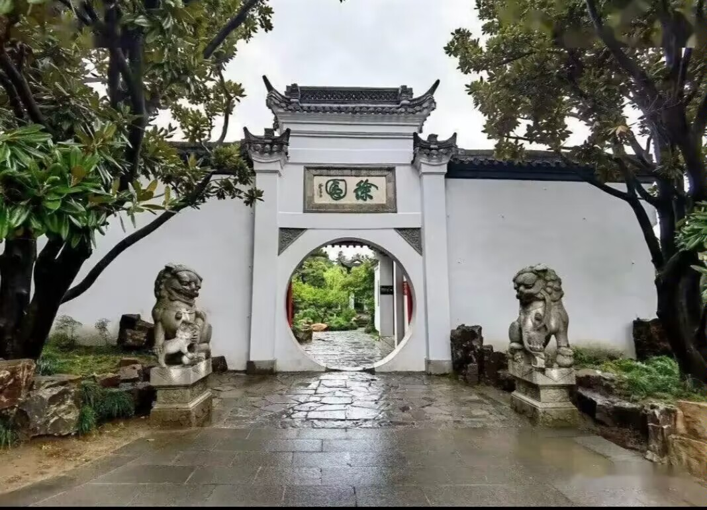
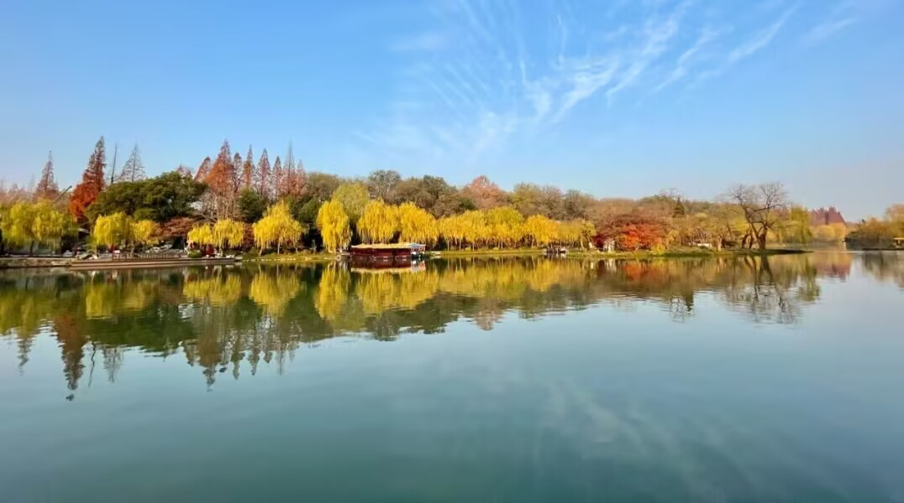
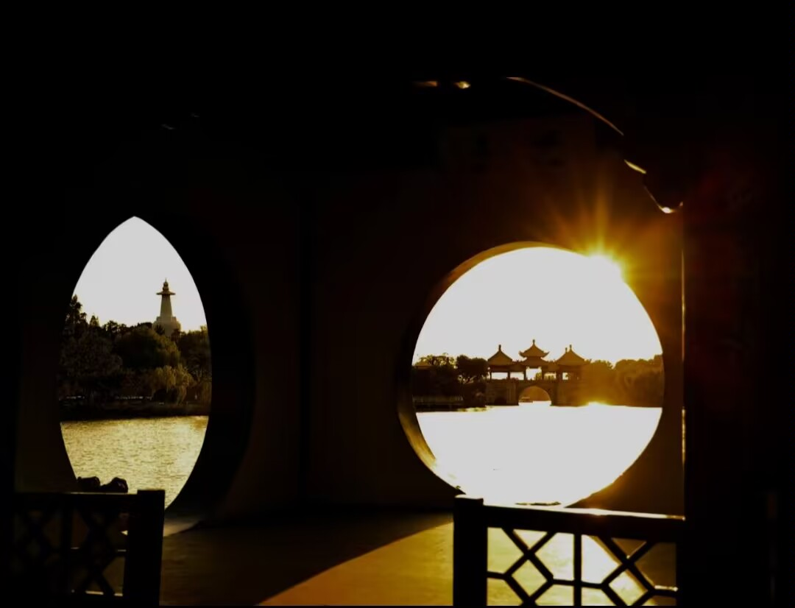
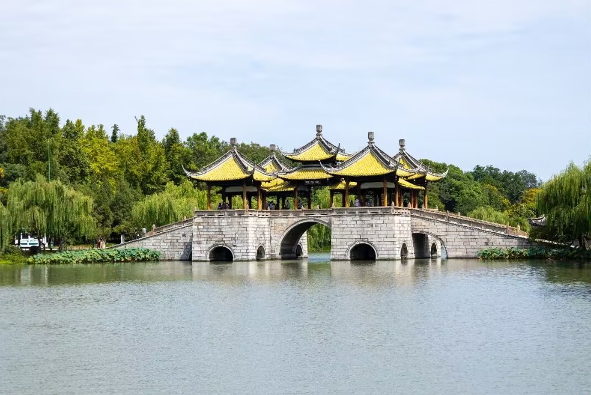

|  | 徐园1915年建于原"桃花坞"旧址，为纪念军阀徐宝山而建的祠园。园门如望日的满月，门边坐-对沉思的石狮，门额书"徐园"两字，一楷- -草，另有风味，为吉亮工所书。徐园内的主厅是"听鹂馆"，馆内有一副楠木罩阁采用上好的楠木精雕细刻而成，极为细腻。 |
|  | “长堤春柳”是扬州著名的清二十四景之一，堤长六百余米，三步一桃,五步一柳，桃柳相间。每当阳春三月，春花缤纷烂漫，柳丝婀娜起舞，飞扬如烟。相传当年隋炀帝杨广为到扬州，下令开挖南北大运河，河道开挖好之后，翰林学士虞世基建议在河两岸种植柳树，一来可以遮荫，同时也可以保护堤坝。隋炀帝当年还亲手栽了一株柳树，并赐姓为"杨"，后来人们便称柳树为"杨柳"。 |
|  | 吹台，又名钓鱼台，相传因乾隆在此钓过鱼而得名。其实，钓鱼台的妙处在于巧妙地运用了“框景"手法，成为中国园林”框景"艺术的经典之作。面西而站，正前方的洞借来远方的五亭桥，呈横卧波光，洞成正圆形;南面借来白塔，如春笋破箨，拔地而起，把洞拉长呈椭圆形。这一横一竖，一黄一素形成一幅构图殊异的美丽画景。真是画中有画，景外有景，妙趣横生。 |
|  | 五亭桥是瘦西湖的标志，其最大的特点是阴柔阳刚的完美结合，南秀北雄的有机融和。五亭桥是仿北京北海的五龙亭和十七孔桥而建的。"上建五亭、下列四翼，桥洞正侧凡十有五。"该桥建于莲花堤上，是清乾隆二十二年(1757)巡盐御史高恒及扬州盐商为迎奉乾隆帝五亭桥而建，是因为建于莲花堤上，所以它又叫莲花桥。 |
|
|